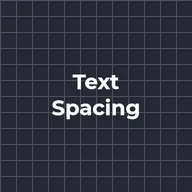

تباعد النص

يغيّر المسافة بين الأحرف وبين الأسطر في طبقة نص. «تباعد الأحرف» يُبعد الأحرف بعضها عن بعض، أو يقرّبها تحت 0%. «تباعد الأسطر» يحدد مدى تباعد الأسطر: 100% هو المعتاد و200% يضاعفه. أضف إطارًا مفتاحيًا لأيٍّ منهما لتحريك التباعد.
الإعدادات
| الإعداد | النوع | النطاق | الافتراضي |
|---|---|---|---|
| تباعد الأحرف | رقم | من -1000% إلى 1000% | 0% |
| تباعد الأسطر | رقم | من 0% إلى 999.9% | 100% |